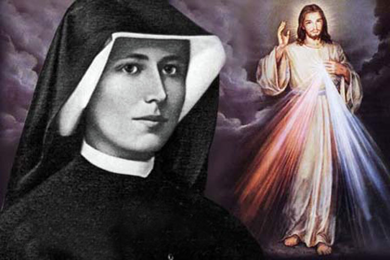

З жыцця святой Фаусціны Кавальскай
Фаусціна нарадзілася 25 жніўня 1905-га года. Была трэцім дзіцём з дзесяці ў сям’і Марыяны і Станіслава Кавальскіх.
1 жніўня 1925 года ўступіла ў Кангрэгацыю Сясцёр Божай Маці Міласэрднасці.
Яна была адаронная Богам шматлікімі звышзвычайнымі Божымі ласкамі і дасягнула вышыні еднасці з Богам на зямлі.
Праз яе, Езус нагадаў усяму свету біблейскую праўду аб міласэрднам каханні Бога да кожнага чалавека і абраў яе апосталам Сваёй міласэрднасці, каб увесь свет пачуў вялікую вестку. Для гэтага Ён даў так сама і новыя формы пашаны Божай Міласэрднасці: абраз з надпісам “Езу давяраю Табе!”, свята “Божай Міласэрднасці” ў першую нядзелю пасля Пасхі, Вяночак да Божай Міласэрднасці і малітву ў Яго смяротны час (15 гадзін), якая называецца малітвай “У Гадзіну Міласэрднасці”.
Сястра Фраусціна памерла 5-га кастрычніка 1938 года. 30-га красавіка 2000-га года папа рымскі Ян Павел II далучыў яе да ліку святых.
Надзвычай Благаслаўлённым быў Віленскі перыяд жыцця сястры Фраусціны. З 25 мая 1933 года па 21 сакавіка 1936 года.
Менавіта у Вільні сястра Фраўсціна ўпершыню пачула ад Езуса вяночак да Божай Міласэрднасці, малітву для суцішвання гневу Божага. Так сама ў Вільні яна свайгоспаведніка ксяндза Міхала Сапоцьку і па яго загаду распачала пісаць свій дзённік “Божая Миласэрднасць у маёй душы”. І так сам з дапамогай ксяндза Михала быў напісаны першы абраз: “Езу, давяраю табе!” і ўрачыста выстаўленны ў Вострабрамскай капліцы ў першую нядзелю пасля пасхі.
Сувязь:
- +375-29-246-62-97 (МТС)
- +375-25-618-1750 (life)
- +375-29-246-62-98 (МТС)
- +375-25-786-08-99 (life)